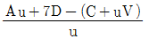

산림기사 (2005-05-29 기출문제)
1과목: 조림학
1. 가을에 굴취한 묘목의 가식방법으로 가장 적당한 것은?
- 묘목의 끝부분이 가을에는 남쪽을 향하도록 비스듬이 눕혀서 가식한다.
- 유기질 비료가 많은 질흙이 좋다.
- 잎의 뒷면이 햇볕을 향하도록 한다.
- 지엽(枝葉)에 다량의 관수를 한다.
(정답률: 82%)

2. 수목의 내음성 판단과 관련된 내용 중에서 가장 옳은 것은?
- 임관밀도가 높으면 양수이다.
- 자연전지가 잘 되면 음수이다.
- 잎의 해면조직이 책상조직보다 더 발달해 있으면 음수 이다.
- 지름을 수고로 나눈 값이 낮아지면 음수이다.
(정답률: 75%)
3. 토양 내에서 수목의 뿌리와 공생하는 균근(菌根)에 대한 설명 중에서 가장 바르게 기술한 것은?
- 근류균(根瘤菌)과 같은 종류의 세균이다.
- 질소고정을 통해 수목의 생장을 도와준다.
- 소나무에 생기는 송이는 내생균근의 일종이다.
- 낙엽송이나 가문비나무에는 외생균근이 잘 발달한다.
(정답률: 39%)
4. 다음 중 삽목번식이 가장 쉽게 되는 것은?
- 백합나무
- 옻나무
- 떡갈나무
- 은행나무
(정답률: 40%)
5. 다음 중 택벌 천연하종갱신의 장점이 아닌 것은?
- 음수의 갱신에 적합하다.
- 보속 생산을 할 수 있다.
- 토지 및 치수의 보호가 잘 된다.
- 기술이 필요치 않으며 경영이 간단하다.
(정답률: 73%)
6. 다음 중 파종조림이 곤란한 수종은?
- 상수리나무
- 전나무
- 가래나무
- 싸리
(정답률: 50%)
7. 측방천연하종갱신에서 교호대상(帶狀)개벌시 일반적으로 대상 벌채구의 폭은 어느 정도로 하는가?
- 모수림 수고의 9 ~ 10배
- 모수림 수고의 7 ~ 8배
- 모수림 수고의 5 ~ 6배
- 모수림 수고의 2 ~ 4배
(정답률: 60%)
8. 하목은 짧은 윤벌기로서 개벌이 되고, 상목은 택벌적으로 벌채된다. 상목의 영급은 모두 하목의 윤벌기의 정수배가 되는 작업종은?
- 택벌작업
- 모수작업
- 중림작업
- 개벌작업
(정답률: 63%)
9. 개화 당년에 종자가 결실하는 수종으로 묶어진 것은?
- 소나무, 회양목
- 상수리나무, 해송
- 떡갈나무, 오동나무
- 잣나무, 버드나무
(정답률: 73%)
10. 다음 중 왜림 작업으로 갱신하기 적당하지 않은 수종은?
- 참나무류
- 포플러류
- 오리나무류
- 대다수의 침엽수류
(정답률: 77%)
11. 다음 수종 중 무기영양소 요구도가 가장 큰 것은?
- 소나무
- 피나무
- 자작나무
- 연필향나무
(정답률: 53%)
12. 마이너스(-)이온으로서 수목의 뿌리로부터 흡수되는 것은?
- NH4
- PO4
- Ca
- Na
(정답률: 59%)
13. 종자 후숙(After ripening)에 장기간을 요하는 종자는?
- 졸참나무종자
- 느릅나무종자
- 해송종자
- 은행나무종자
(정답률: 알수없음)
14. 파종상을 만들고 종자를 뿌리기전 로울러(roller)로 진압(鎭壓)하는 이유 중에서 가장 적당한 것은?
- 모든 종자파종은 평상(平床)으로 만들어야 하기 때문이다.
- 토양의 모세관을 회복하여 토양의 건조를 막고 보수력을 높이기 위함이다.
- 제초를 잘하기 위함이다.
- 지면이 단단하므로 뿌리가 많이 발생하기 위함이다.
(정답률: 78%)
15. 생장에 요하는 수분량(요수량) 그 값이 가장 적은 것은?
- 소나무류의 수풀
- 참나무류의 수풀
- 가문비나무류의 수풀
- 서나무류의 수풀
(정답률: 50%)
16. 갱신법을 적용할 때 일반적으로 분류하는 군(群)과 단(團)은 어느 정도의 면적을 말하는가?
- 0.1 ~ 1.0 ha 이면 단으로, 0.1 ha 이하면 군으로 분류한다.
- 0.1 ~ 1.0 ha 이면 군으로, 0.1 ha 이하면 단으로 분류한다.
- 1.0 ~ 10 ha 이면 단으로, 1.0 ha 이하면 군으로 분류한다.
- 10 ~ 20 ha 이면 단으로, 10 ha 이하면 군으로 분류한다.
(정답률: 40%)
17. 하층간벌의 일종으로 4, 5급목의 전부를 벌채하는 것으로 임관을 구성하는 다른 급의 임목 대부분은 벌채하지 않는 것은?
- A종간벌
- B종간벌
- C종간벌
- D종간벌
(정답률: 58%)
18. 생활형에 있어서 상록활엽관목으로 취급되는 것은?
- 꽝꽝나무, 사철나무
- 누운잣나무, 후피향나무
- 은행나무, 대나무
- 동백나무, 낙엽송
(정답률: 87%)
19. 순량율 50%, 득묘율 70%, 고사율 60%, 발아율 80%일 때 그종자의 효율은?
- 100%
- 80%
- 60%
- 40%
(정답률: 72%)
20. 가지치기 작업에서 가지치기의 정도는 어느 것이 가장 적당한가?
- 수간 하부의 고지(枯枝)를 치는 정도가 좋다.
- 역지(力枝) 이하의 가지는 치는 것이 좋다.
- 역지(力枝)위까지 치는 것이 성장을 촉진하고 좋다.
- 수초(樹梢)까지의 가지는 치는 것이 통직(通直)한 간재(幹材)를 생산한다.
(정답률: 77%)
2과목: 산림보호학
21. 여름포자세대(夏胞子世代)를 가지고 있지 않는 병원균은?
- 잣나무 털녹병균
- 포플러 잎녹병균
- 향나무 녹병균
- 소나무 혹병균
(정답률: 63%)
22. 수목이 병에 걸리기 쉬운 성질을 나타내는 것은?
- 저항성
- 감수성
- 병원성
- 이병성
(정답률: 90%)
23. 다음 병들 중에서 산림 내에서의 모닥불이나 산불이 발병(發病) 유인(誘因)으로 작용하는 것은?
- 리지나 뿌리썩음병 (Rhizina root rot)
- 피목가지마름병 (Cenangium dieback, twig blight)
- 아밀라리아뿌리썩음병 (Armillaria root rot)
- 뿌리혹병 (根頭癌腫病, crown gall)
(정답률: 95%)
24. 다음 중 파이토 플라스마(Phytoplasma)에 감수성인 것은?
- Penicillin
- Tetracycline
- Benlate
- Streptomycin
(정답률: 94%)
25. 솔나방의 생물학적 방제법으로 경화병균을 산지에 이식할 경우 가장 적당한 시기는?
- 1월
- 3월
- 6월
- 12월
(정답률: 62%)
26. 뿌리혹병의 병원(病原)이 되는 미생물은 다음 중 어디에 속하는가?
- 세균(Bacteria)
- 진균(Fungus)
- 파이토 플라스마(Phytoplasma)
- 바이러스(Virus)
(정답률: 82%)
27. 약제를 식물체의 뿌리, 줄기, 잎 등에 흡수시켜 깍지벌레와 같은 흡즙성 곤충을 죽게하는 살충제는?
- 기피제
- 침투성살충제
- 소화중독제
- 유인제
(정답률: 84%)
28. 솔나방 유충의 월동처로 가장 적당한 곳은?
- 소나무 엽초 속
- 수피사이나 지피물 속
- 깊은 땅속
- 중간기주 위
(정답률: 79%)
29. 다음 중 비료목으로 가장 적합하지 않는 수종은?
- 상수리나무
- 싸리나무
- 소귀나무
- 오리나무
(정답률: 77%)
30. 다음 중 수병의 병징에 해당되는 것은?
- 근상균사속(rhizomorph)
- 괴사(necrosis)
- 균사체(mycelium)
- 자좌(stroma)
(정답률: 48%)
31. 살충효과를 조사하고자 한다. 대조구의 생충율이 98.3%이고, 약제 처리구의 생충율이 88.3%이었다면 처리구의 보정살충율은 몇 %인가?
- 10.0%
- 10.2%
- 10.4%
- 10.6%
(정답률: 44%)
32. 박쥐나방에 관한 설명 중 옳지 않는 것은?
- 1년 1회 발생하며 알로 월동한다.
- 유충이 나무줄기를 가해한다.
- 유충은 똥을 밖으로 내보내지 않는다.
- 초본류의 줄기에도 구멍을 뚫고 가해한다.
(정답률: 74%)
33. 해안지방에서 방조림의 주목(主木)으로 가장 많이 사용 되는 수종은?
- Pinus thunbergii
- Pinus densiflora
- Cryptomeria japonica
- Abies holophylla
(정답률: 72%)
34. 식물병의 진단과 관계가 없는 것은?
- Koch의 원칙
- 지표식물
- 항혈청
- 종자소독
(정답률: 56%)
35. 소나무류 잎떨림병의 방제법으로 적당치 않은 방법은?
- 병든 잎을 모아 태운다.
- 4-4식 보르도액을 살포한다.
- 활엽수 하목식재를 금한다.
- 비배관리로 건전하게 육성한다.
(정답률: 48%)
36. 토양양분 가운데 결핍되면 수목의 가는 뿌리가 썩기 쉽고 기상해에 대한 저항성을 떨어 뜨리는 양분원소는?
- 철(Fe)
- 칼슘(Ca)
- 질소(N)
- 칼륨(K)
(정답률: 38%)
37. 녹병균의 기생방법으로 가장 옳은 것은?
- 순활물 기생
- 순사물 기생
- 활물겸사물 기생
- 사물겸활물 기생
(정답률: 77%)
38. 흰불나방 방제에 가장 좋은 약제는?
- 메타유제(메타시스톡스)
- 비피유제(밧사)
- 메치온유제(수푸라사이드)
- 디프수화제(디프록스)
(정답률: 45%)
39. 다음 중에서 한상(寒傷)을 바르게 설명한 것은?
- 기온이 0℃이상일지라도 낮은 기온으로 일어나는 임목 피해
- 기온이 0℃이하로 내려감으로서 일어나는 임목 피해
- 찬 바람에 의하여 나무 조직이 어는 임목 피해
- 찬 서리에 의하여 일어나는 임목 피해
(정답률: 72%)
40. 오리나무잎벌레의 월동 형태는?
- 성충
- 유충
- 번데기
- 알
(정답률: 80%)
3과목: 임업경영학
41. 다음 중 직경측정 기구가 아닌 것은?
- 윤척
- 빌티모아스티크
- 직경 테이프
- 리라스코프
(정답률: 38%)
42. 어떤 건물이 장부원가가 500만원, 폐기시의 잔존가액이 50만원으로 예상될 때 그 내용(耐用)연수를 50년으로 하면 매년의 감가삼각비는 (5,000,0000 - 500,000)/50 = 90만원으로 산출 할 수 있는 방법으로 가장 적당한 것은?
- 정율법
- 정액법
- 급수법
- 부정삼각법
(정답률: 74%)
43. 경영계획 작성시 나무를 벌채하기로 예정한 시기로 가장 적당한 것은?
- 벌채령
- 벌기령
- 윤벌령
- 회귀년
(정답률: 60%)
44. 임 목의 평가방법을 분류해 놓은 것 중 연결이 틀린 것은?
- 원가방식 - 비용가법
- 수익방식 - Glaser법
- 원가수익절충방법 - 임지기망가법응용법
- 비교방식 - 시장가역산법
(정답률: 85%)
45. 다음 중 녹지자연도가 낮아 휴양의 효과가 가장 낮은 지역은?
- 극상천연림
- 인공초지
- 인공조림지
- 고산자연초원
(정답률: 50%)
46. 임지기망가 최대의 시기에 관한 기술 중 잘못된 것은?
- 주벌수익의 증대속도가 빨리 감퇴할수록 빨리 나타난다
- 간벌수익이 클수록 빨리 나타난다.
- 이율이 낮을수록 빨리 나타난다.
- 채취비가 적을수록 빨리 나타난다.
(정답률: 50%)
47. 표준목의 재적을 측정할 때, 각 계급의 흉고단면적을 같게 한 것으로서, 계산이 복잡하지만 정확도가 높은 방법은?
- 단급법
- Urich법
- Hartig법
- Draudt법
(정답률: 알수없음)
48. 다음 중 전가계수(前價係數)와 같은 뜻이 아닌 것은?
- 현가계수(現價係數)
- 할인계수(割引係數)
- 복리율(複利率)
- 일괄현가계수(一括現價係數)
(정답률: 53%)
49. 작업급 면적이 1,200헥타(ha)이고 윤벌기가 60년이며, 갱신기가 0년일때 법정 영급면적은 얼마인가? (단, 영계 = 20이다.)
- 200ha
- 400ha
- 300ha
- 600ha
(정답률: 65%)
50. 사유림의 경영주체가 아닌 것은?
- 회사
- 문중
- 종교단체
- 지방자치단체
(정답률: 72%)
51. 체인쏘를 100만원에 구입하여 내용 년수를 10년으로 하고, 폐기가가 20만원일 때, 정액법에 의한 년간 감가상각비는 얼마인가?
- 15만원
- 10만원
- 8만원
- 5만원
(정답률: 89%)
52. 손익분기점의 분석을 위해서는 몇 가지의 가정이 필요한데 가장 거리가 먼 것은?
- 제품의 판매가격은 판매량이 변동하여도 변화되지 않는다.
- 원가는 고정비와 변동비로 구분할 수 있다.
- 제품 한 단위당 변동비는 항상 일정하다.
- 생산량과 판매량은 항상 다르며, 생산과 판매에 보완성이 있다.
(정답률: 75%)
53. 일정한 수식이나 특수한 규정이 따로 정해져 있는 것이 아니라 경험을 근거로 실행하는 것이다. 이 방법의 목표는 어디까지나 조림·무육을 위주로 하는 수확조절법은?
- 법정축적법
- 생장률법
- 조사법
- 영급법
(정답률: 73%)
54. 매매사례비교법(賣買事例比較法)의 장·단점에 관한 설명 중 틀린 것은?
- 대체의 원칙을 그 논리적 근거로 하고 있으므로 현실성과 설득력이 있다.
- 매매사례가 있는 모든 물건에 적용이 용이하여 삼림평가 방법 중 중추적 역할을 한다.
- 시점수정과 사정보정이 용이하여 평가의 정확성을 기할 수 있다.
- 거래의 대상이 안되는 특수한 물건에는 적용하기가 곤란하다.
(정답률: 46%)
55. 단목(單木)의 연령측정 방법이 아닌 것은?
- 목측에 의한 방법
- 지절(枝節)에 의한 방법
- 방위(方位)에 의한 방법
- 성장추에 의한 방법
(정답률: 57%)
56. 현재 m 년에서 벌채 예정된 v 년까지의 임목기망가식은?
- 주벌 및 간벌수확 전가합계 - 지대 및 관리비 후가 합계
- 주벌 및 간벌수확 전가합계 - 지대 및 관리비 전가 합계
- 주벌 및 간벌수확 후가합계 - 지대 및 관리비 후가 합계
- 주벌 및 간벌수확 후가합계 - 지대 및 관리비 전가 합계
(정답률: 62%)
57. 투자에 의하여 발생할 미래의 모든 현금 흐름을 알맞는 할인율로 할인하여 계산한 현재가를 기준하여 장기투자를 결정하는 방법은?
- 투자이익률법
- 순현재가치법
- 수익·비용률법
- 내부투자수익률법
(정답률: 46%)
58. 현재 A임분의 재적은 200m3/ha인데, 이 임분의 5년전 재적은 160m3/ha였다. Pressler식에 의한 임분의 재적생장률은?
- 2.2 %
- 3.3 %
- 4.4 %
- 5.5 %
(정답률: 60%)
59.

의 식이 나타내는 벌기령은? (단, Au - 주벌수확, C - 조림비, ７D -간벌수확합계, V - 관리비, u - 벌기령)- 토지순수익 최대의 벌기령
- 삼림순수익 최대의 벌기령
- 재적수확 최대의 벌기령
- 임리 최대의 벌기령
(정답률: 31%)
60. 영림계획의 내용결정에 있어서 작업종의 결정에 대한 설명 중 틀린 것은?
- 원칙적으로 소반마다 채용할 작업종을 결정한다.
- 작업종은 삼림의 현황과 갱신수종의 상태, 과거에 채용하였던 작업종의 운영성과 그리고 경제성등을 고려하여 채용한다.
- 작업종은 작업급설정의 주요 인자이므로 작업종이 다른 임분을 하나의 작업급으로 취급하는 것은 피하는 것이 원칙이다.
- 우리 나라에서는 사유림에서의 왜림작업 채택을 금하고 있다.
(정답률: 67%)
4과목: 임도공학
61. 벌목용 기계톱의 사용방법에 대한 설명 중 맞지 않는 것은?
- 항상 양호한 상태로 정비 점검한다.
- 연료는 휘발유만을 사용한다.
- 몸체의 사용시간은 약 1,500시간이다.
- 작업시에는 안전장구를 착용한다.
(정답률: 62%)
62. 겨울철 기온이 5℃ 이하일 때 기계톱의 오일 점도로 어떤 것을 사용하는 것이 가장 알맞은가?
- SAE # 40
- SAE # 30
- SAE # 20
- SAE # 10
(정답률: 36%)
63. 더덕을 손질할 때 느껴지는 끈적이는 유액으로 인삼에도 들어 있는 이 성분은?
- 사포닌
- 아스파라긴산
- 라텍스
- 올레오레진
(정답률: 62%)
64. 기계톱에서는 벌목 및 조재작업 중에 발생하는 진동과 위험에 대비하여 여러가지 안전장치를 부착하고 있는데 다음 중 안전장치만으로 묶인 항은?
- 앞손 보호판, 안내판 덮개, 체인잡이
- 체인잡이, 액슬래버차단기, 브레이크
- 액슬래버차단기, 스파이크, 뒤손보호판
- 브레이크, 스파이크, 앞조정간
(정답률: 42%)
65. 기계톱의 톱체인 규격은 무엇으로 표시하는가?
- 배기량
- 엔진출력
- 중량
- 피치
(정답률: 69%)
66. 임도개설을 위한 현지실측을 할 때 번호말목(말뚝)은 몇 m마다 매설하는가?
- 20m
- 30m
- 40m
- 50m
(정답률: 50%)
67. 횡단물매가 3%이고, 종단물매가 9%일 때 합성물매는?
- 2√10%
- 3√10%
- 2√5%
- 3√5%
(정답률: 64%)
68. 설계속도가 20km/hr 일 때 일반지형 임도의 종단기울기로 옳은 것은?
- 7 % 이하
- 8 % 이하
- 9 % 이하
- 12 % 이하
(정답률: 67%)
69. 벌목과 운재작업의 작업조직이란 여러 가지 작업공정을 조합하는 것을 말하는데 다음 중 작업조직을 편성하는 경우에 유의해야 할 사항이 아닌 것은?
- 작업인원의 적정배치
- 노동강도의 경감화
- 효과적 반출노선의 선정
- 작업기간의 단순화
(정답률: 22%)
70. 플라스틱 수라를 이용하여 작업을 하려고 한다. 작업방법으로 올바른 것은?
- 플라스틱 수라의 설치시 종단경사는 최소한 40% 이상이되어야 한다.
- 플라스틱 수라의 설치시 종단경사가 100%를 초과할 경우에만 속도조절장치를 설치한다.
- 집재선 사이의 거리(작업폭)는 약 20∼30m 정도로 하고 집재선의 나비는 1m 정도가 적당하다.
- 집재가 되는 출구쪽의 경사는 급경사라도 상관없다.
(정답률: 63%)
71. 벌채 적지에서 임목을 벌채하고 박피(剝皮)하는 이유 중 틀린 것은?
- 운송량 감소
- 병충해 전파방지
- 파열(破裂)방지
- 깨끗한 칩(chip)이용
(정답률: 35%)
72. 임목 벌채시 사용하는 전단용 칼에 대한 설명 중 옳지 않은 것은?
- 넓은 폭전단기는 칼날을 밀어서 나무를 자른다.
- 전단용 칼은 칼날의 두께, 두께각도 및 끝날 좁아지기에 따라 여러 종류가 있다.
- 넓은 모루날은 좁은 모루날보다 절단력이 적게 필요하다.
- 복동전단기는 나무를 넘길 때 쐐기를 사용하지 않는다.
(정답률: 58%)
73. 임도부지의 지목과 지번 등 임도시공에 필요한 구역을 표시한 도면은?
- 위치도
- 평면도
- 표준도
- 용지도
(정답률: 34%)
74. 벌목과 운재작업을 조직할 때 유의해야 할 사항이 아닌 것은?
- 작업기간의 단축
- 노동강도의 경감
- 노동의 안전
- 4인 1조의 작업조 편성
(정답률: 65%)
75. 양송이 재배시에 균상에 복토하는 두께는 재료에 따라 다르나 대체로 몇 ㎝로 하는 것이 가장 적당한가?
- 2∼3 ㎝
- 4∼5 ㎝
- 6∼7 ㎝
- 8∼9 ㎝
(정답률: 50%)
76. Turpentine의 설명으로 틀리는 것은?
- 소나무속의 수종으로부터 얻어지는 휘발성의 정유(Essential oil)이다.
- 크라프트 증해에 의한 펄프제조 공정에서 부산물로서 얻어진다.
- 소나무재, 칩, 나프타등의 용재에서 추출한 물질을 수증기로 증해하여 생산한다.
- 도로원료, 사이즈제, 접착제등에 이용한다.
(정답률: 39%)
77. 임산물의 수송 또는 작업원의 이동에 필요한 기능을 하는 임도는?
- 도달임도
- 시업임도
- 경영임도
- 보조임도
(정답률: 30%)
78. 클로소이드 곡선(clothoid curve)에 대한 설명 중 틀린 것은?
- 일반도로나 고규격 임도의 완화구간에 사용한다.
- 곡선반경이 곡선길이에 비례하여 감소하는 곡선이다.
- 일반식은 r ·l = C로 표현하며, l 은 길이, r 은 곡선의 크기를 나타내는 변수이다.
- 등속 주행 중의 자동차가 핸들을 일정한 각속도로 회전 시킬 경우에 바퀴가 그리는 궤적과 일치한다.
(정답률: 30%)
79. 입목의 벌도시 수구의 각도는 어느 정도가 가장 적당한가?
- 10 ~ 15°
- 20 ~ 30°
- 30 ~ 45°
- 50 ~ 60°
(정답률: 64%)
80. 어느 산림유역에서 집수면적(ha)에 대한 유량 계산식으로 알맞은 것은?
- Q = 0.0002778 CIA
- Q = 0.002778 CIA
- Q = 0.02778 CIA
- Q = 0.2778 CIA
(정답률: 69%)
5과목: 사방공학
81. 환경해설의 주제를 선택하는 기준으로 부적합한 것은?
- 청중과 어떻게 연관될 수 있는가?
- 비록 개인적으로 흥미롭지 못하더라도 교육적인가?
- 방문객에게 풍부하고 생산적인 경험을 갖게 해줄 것 인가?
- 연구자료를 충분히 구할 수 있는가?
(정답률: 69%)
82. 다음 중 국립공원의 지정자로 가장 적당한 것은?
- 건설교통부장관
- 행정자치부장관
- 환경부장관
- 농림부장관
(정답률: 56%)
83. 다음 자연휴양림의 일반적인 조성방침으로 틀린 것은?
- 산림의 다목적 경영의 일환으로 조성한다.
- 산림자원 중심의 감상, 체험, 탐방을 위한 자연친화적 공간을 조성한다.
- 휴양림 내 휴게음식점, 산악 스포츠 시설 등을 설치할 수 없다.
- 휴양시설은 자연과 조화 있게 설치하고 산림훼손을 최소화한다.
(정답률: 83%)
84. 휴양림 지정 대상 자격요건에 포함되지 않는 것은?
- 임황 조건
- 이용성 및 접근성 조건
- 수자원 조건
- 관리성 조건
(정답률: 34%)
85. 계곡수욕장을 설치하여 운영할 때, 수질오염을 방지하기 위한 정화방식으로 경제적이면서 효과를 꾀할 수 있는 가장 유리한 설계방법은?
- 월류(overflow)
- 콘크리트 댐(concrete dam)
- 순환여과 자동화시설
- 저류지 설치
(정답률: 40%)
86. 다음 자연휴양림의 기본시설이 아닌 것은?
- 편익시설
- 위생시설
- 편리시설
- 임업체험을 위한 시설
(정답률: 37%)
87. 서비스 평가의 순환과정이 가장 바르게 나열된 것은?
- 계획 - 설계 - 시행 - 결과해석 - 결과의 적용
- 결과해석 - 결과의 적용 - 계획 - 설계 - 시행
- 결과해석 - 계획 - 설계 - 시행 - 결과의 적용
- 설계 - 계획 - 시행 - 결과해석 - 결과의 적용
(정답률: 54%)
88. 좋은 시설의 유지관리는 이용객의 만족 및 휴양경험의 질에 크게 영향을 준다. 다음의 시설물별로 충족시킬 수있는 행위가 바르게 짝지어 진 것은?
- 등산로 - 자연환경 지식의 습득
- 피크닉장 - 사회적 유대강화 경험
- 방문객센터 - 아름다운 경관 관상
- 전망대 - 고적감 등의 휴양경험
(정답률: 69%)
89. 탐방로의 난이도, 가중치 부여 및 흐름용량 산정에 대한 설명으로 맞지 않는 것은?
- 탐방로의 경사도가 클수록 보행이 어렵고 육체적 노력이 크게 요구되는 등 탐방로 이용상의 생리적 변화는 경사도에 따라 달라진다.
- 산을 내려올 때는 올라가는 경우보다 용이하여 신체적인 피로는 상대적으로 높기 때문에 산을 오를 때에 비해 0.7 ~ 0.8의 가중치를 준다.
- 설정된 경사도에 대한 탐방로의 난이도 가중치를 실제 지형도상의 측정된 두 지점사이의 거리에 곱하여 흐름 용량값을 구한다.
- 탐방로 이용상의 난이 정도를 나타내기 위해서는 몇 등급으로 구분하고 각 등급에 적절한 가중치를 부여할수 있다.
(정답률: 75%)
90. 휴양서비스의 질을 높이기 위해서는 현재 제공되는 서비스에 대해 고객이 어떻게 생각하고 있는 지를 우선 알아야 한다. 서비스의 종류에 따라 또는 평가자에 따라 평가의 목적이 각기 다를 수 있지만 기본적으로 대부분의 평가가 지닌 목적으로 적당하지 않는 것은?
- 비용과 편익의 분석을 위해
- 서비스의 제공목적과 목표가 달성되었는지를 점검하기 위해
- 프로그램이 참여자의 만족과 삶의 질에 어떻게 관여하는지를 알기 위해
- 서비스의 가치와 질의 유지만을 위하여
(정답률: 58%)
91. 휴양마케팅의 서비스 특성 중 서비스 수행에 있어서 잠재적으로 지니고 있는 변동 가능성을 의미하는 특성은?
- 무형성(無形性, intangibility)
- 비분리성(非分離性, inseparability)
- 동시성(同時性, spontaneity)
- 이질성(異質性, heterogeneity)
(정답률: 45%)
92. 운동시설을 갖춘 숲길, 즉 산림운동로에 가장 적합한 규모는 어느 정도인가?
- 폭 2 m, 연장 2.4 km
- 폭 2 m, 연장 4.0 km
- 폭 1 m, 연장 4.2 km
- 폭 1 m, 연장 8.0 km
(정답률: 48%)
93. 휴양 참여 영향 인자와 거리가 가장 먼 것은?
- 인구
- 소득
- 교육
- 접근성
(정답률: 20%)
94. 자연휴양림 개발방침을 결정할 때 기본적으로 분석해야 할 내용이 아닌 것은?
- 자원분석
- 요인분석
- 시장분석
- 이용자분석
(정답률: 60%)
95. 다음 중 "산림휴양(山林休養)"의 모습을 가장 잘 나타낸 것은?
- 송하취생도(松下吹笙圖) : 김홍도 작
- 묵매도(墨梅圖) : 어몽룡(魚夢龍)작
- 금강전도(金剛全圖) : 겸재 정선 작
- 단발령망금강산(斷髮嶺望金剛山) : 이인문 작
(정답률: 43%)
96. 이용자 관리에 있어서 직접적 관리에 대한 설명이 맞지 않는 것은?
- 직접적 관리는 그 지역 내에서 누릴 수 있는 이용객 선택의 자유를 제한한다.
- 직접적 관리는 효과가 가시적이지만 이용객의 선택의 자유를 제한하므로 신중히 고려한 후 선택해야 한다.
- 직접적 관리는 자원의 지속과 다른 이용객의 휴양경험을 보호하기 위해 대체로 수긍되고 있다.
- 직접적 관리는 최소한의 통제만으로 이용객의 행위에 영향을 주는 데 초점을 맞추고 있으며, 교육서비스 또는 기회의 제공을 통해 관리대안을 시행한다.
(정답률: 43%)
97. 야외휴양으로부터 얻는 편익을 기술한 것 중 그 성격이 다른 하나는?
- 자아 실현
- 상징적 편익
- 육체적 건강
- 사회 구성원의 삶의 질
(정답률: 16%)
98. 해설의 방법에 있어서 시간과 장소를 가리지 않고, 많은 사람의 이용이 가능하며, 상세한 해설이 가능한 방법은?
- 안내서에 의한 방법
- 해설판에 의한 방법
- 해설자에 의한 방법
- 사실재현에 의한 방법
(정답률: 62%)
99. 야영참가인이 4,000명, 야영 참가 가구수가 1,000가구, 야영횟수가 3회, 그리고 평균 숙박일수가 3일인 경우에 야영수요는?
- 3,000인/일
- 9,000인/일
- 12,000인/일
- 36,000인/일
(정답률: 42%)
100. 휴양이용의 집중요인과 가장 거리가 먼 것은?
- 시설의 분산성
- 장소 매력성
- 가장자리 선호성
- 안전 편리성
(정답률: 50%)